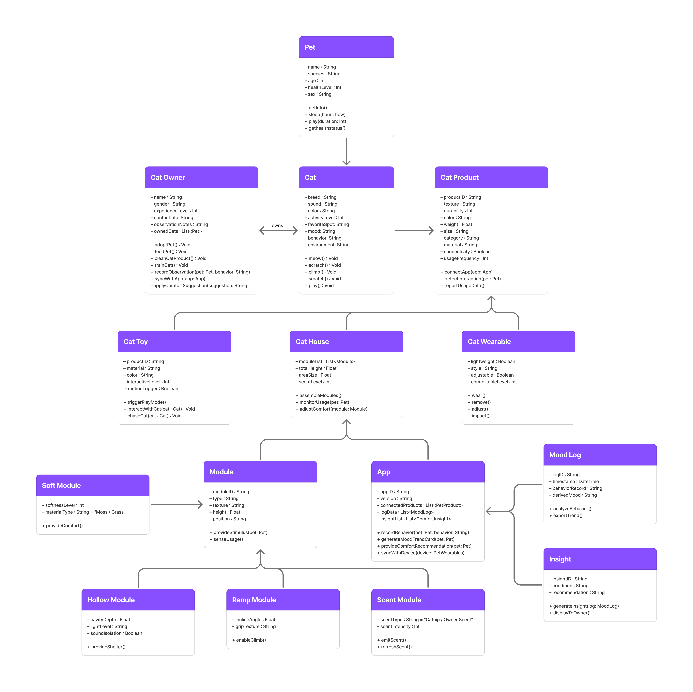
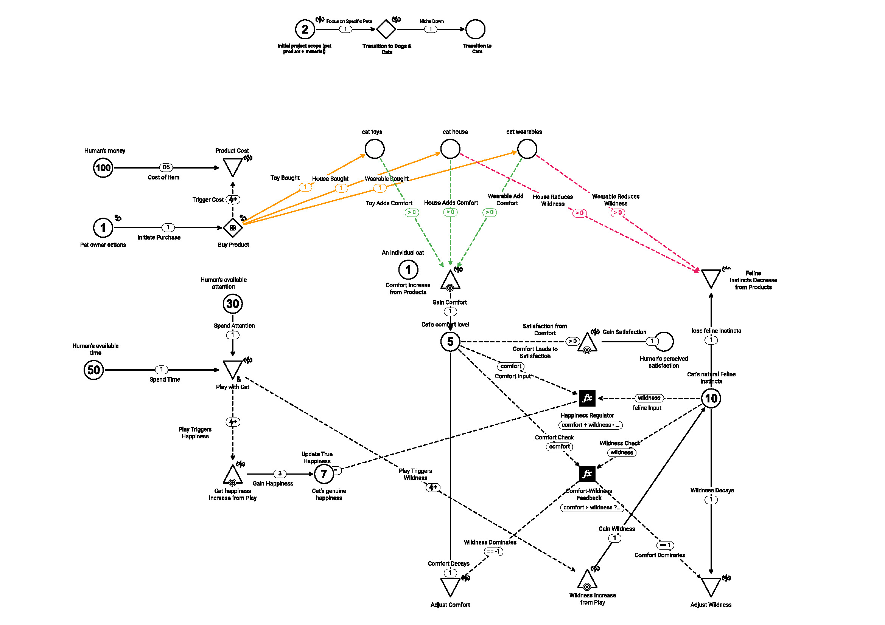

UML Diagrams
Sensory Terrarium — Multi-Sensory Terrain System
The Sensory Terrarium is a modular, multi-sensory habitat designed to help domestic cats regain their natural “territorial complexity.”
By recreating the sensory variety found in the wild to the home, this system allows indoor cats to express natural instincts,
reducing stress and boredom while boosting happiness through play, curiosity, and exploration.
Each module serves a unique role:
- Soft Module — imitates moss or grass.
- Hollow Module — mimics caves or tree hollows, offering a sense of security.
- Ramp Module — introduces height variations like tree trunks, encouraging climbing and exploration.
- Scent Module — holds natural or forest scent, creating emotional familiarity.
Digital Companion App
- Mood Log — lets owners record behavioral observations such as sleeping, exploring, or hiding. The system uses AI to generate cat mood cards (Calm / Curious / Active).
- Comfort Insights — provides suggestions to enhance the cat’s experience, such as “Try replacing the cushion layer.”
Together, the physical modules and the digital interface create a responsive, data-informed ecosystem. It's a system that promotes natural behavior,
emotional balance, and ultimately, a happier and healthier indoor life for cats.

